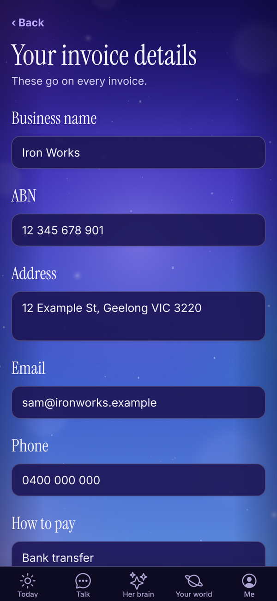
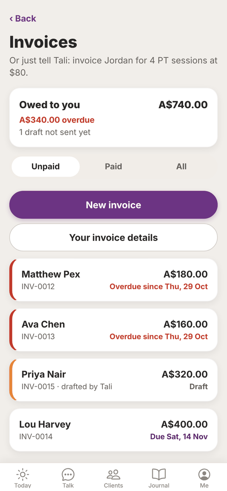
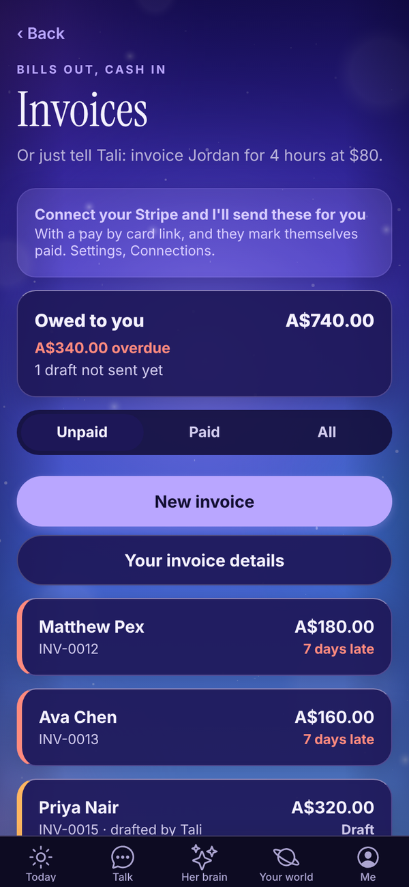
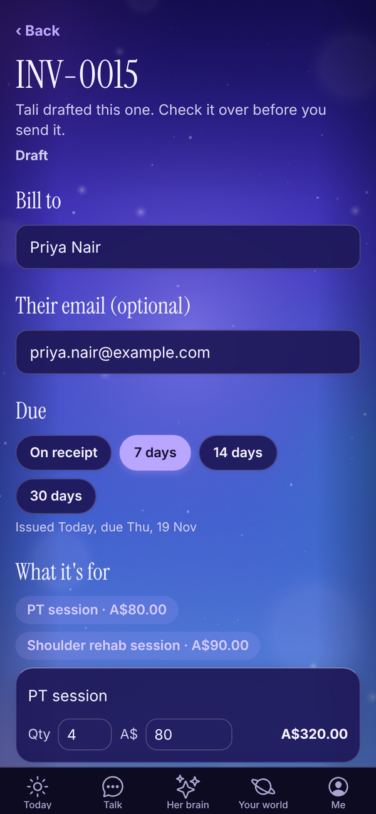
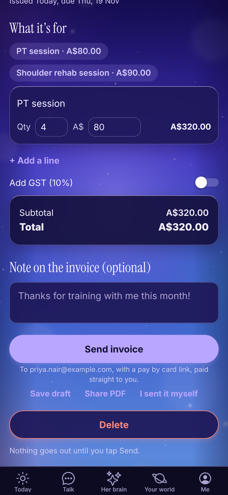
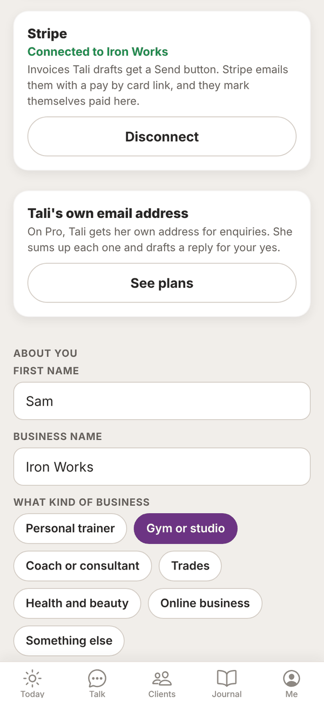
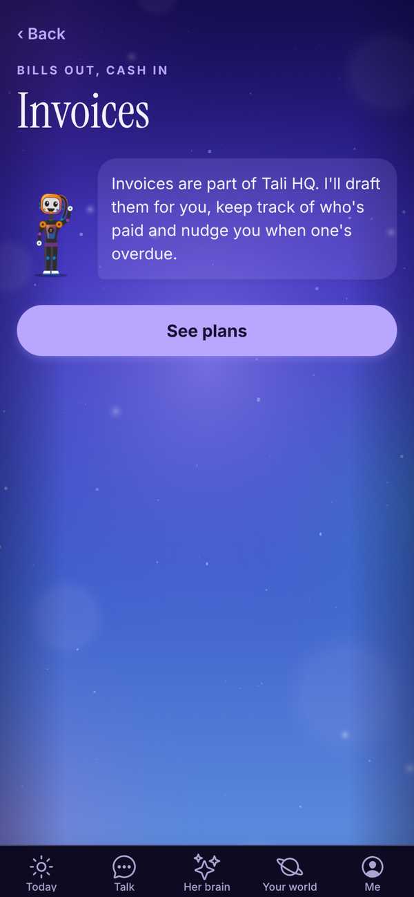

Tali HQ guide
Invoices and Stripe
Make, share and track invoices, let Tali draft them, and send them through your own Stripe.
Invoices lets you make an invoice in a minute, share it as a PDF, and keep track of who's paid. Tali can draft invoices for you, nudge you about overdue ones, and with your own Stripe connected, send them with a pay by card link that marks itself paid. Tali HQ
Open it from Me, Invoices, or the Invoices button on the Clients tab.
Set up your invoice details first#
These go on every invoice. Do this once.

- In Invoices, tap Your invoice details.
- Fill in Business name, ABN, Address, Email and Phone.
- In How to pay, put your bank details or how you like to be paid, for example your BSB, account number and "Reference: invoice number".
- Turn on Registered for GST if you are. It adds 10% GST and calls it a tax invoice.
- Under Usually due, pick On receipt, 7 days, 14 days or 30 days. New invoices use this.
- Add a Footer (optional), like "Thanks for your business!".
- Tap Save.
The invoice list#


- Owed to you: everything sent and not paid, with how much is overdue and how many drafts aren't sent yet.
- Tabs: Unpaid (drafts and sent, soonest due first), Paid and All.
- Each invoice shows the client, number, total and status. Overdue invoices have a red edge and "Overdue since". Drafts have an orange edge, and "drafted by Tali" if Tali made it.
Make an invoice#


- Tap New invoice.
- In Bill to, type the client's name. Matching people from your client list show underneath; tap one to fill in their name and email.
- Add Their email (optional). You need it to send through Stripe.
- Under Due, pick On receipt, 7 days, 14 days or 30 days. The line underneath shows the issue and due dates.
- Under What it's for, type a Description, the Qty and the price in A$. Tap + Add a line for more lines, or Remove to take one off.
- Turn on Add GST (10%) if it applies. The box shows the Subtotal, GST and Total incl. GST.
- Add a Note on the invoice (optional).
- Tap Save draft.
Invoice numbers go up by one each time, like INV-0015.
Or ask Tali#
In Talk, say "invoice Priya for 4 PT sessions at $80". Tali drafts it on the Invoices screen, marked "Tali drafted this one. Check it over before you send it." With Stripe connected, it also lands on Today under Needs your yes with Send with Stripe.
Send it#
You have two ways.
Share the PDF yourself. Open the invoice, tap Share PDF, and send it by email or message. Then tap Mark as sent (or Mark as sent (I sent it myself) when Stripe is connected).
Send with Stripe. With Stripe connected, open a draft and tap Send with Stripe. Stripe emails it to your client with a pay by card link, paid straight to you. You see "Sent INV-0015 to ... It'll mark itself paid when they pay." Tap View it in Stripe to see it in your Stripe account.
Track payment#
- Mark as paid: when a client pays you outside Stripe.
- Not paid after all: on a paid invoice, moves it back to sent.
- Void this invoice: on a sent invoice. It asks Sure? first. A void invoice can't be edited.
- Delete: on a draft or void invoice, then Tap again to delete.
Paid and void invoices are locked, so you can't change their details.
Connect your Stripe#
If you already take card payments with Stripe, connect it so Tali can send invoices through it.

- Open Me, Connections (or tap the Connect your Stripe card on Invoices).
- On the Stripe card, tap Connect Stripe.
- Sign in to the Stripe account you already have and approve it.
- You come back to Settings and see "Connected".
Payments go straight to your Stripe account. Tali HQ never takes a cut and never runs billing for you. To disconnect, tap Disconnect, then Yes, disconnect Stripe. Your Stripe account and the invoices already in it aren't touched.
On a phone app, connect Stripe from the web app at talihq.com.au.
Overdue invoices#
Overdue invoices show on Today in Money and Health, in your morning brief, and Tali can draft a friendly nudge if you ask. On Pro, the Chase overdue invoices rule drafts the reminder for you. See Night school and Rules.
On the Free plan#
Invoices are part of Tali HQ. On Free, the screen says so, with See plans.

Questions#
Does Tali HQ take a fee on Stripe payments?
No. Payments go straight to your own Stripe account. Stripe's normal fees apply.
Can I send an invoice without Stripe?
Yes. Tap Share PDF, send it however you like, then tap Mark as sent.
Why can't I tap Send with Stripe?
The client needs an email. Add it in Their email (optional), save, then send. The button only shows on drafts when Stripe is connected.
Will Tali send an invoice on her own?
No. Tali drafts invoices. You send them.
Can I change an invoice after it's paid?
No, paid and void invoices are locked. If it was marked paid by mistake, tap Not paid after all.
How do I add GST to every invoice?
Turn on Registered for GST in Your invoice details.